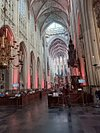
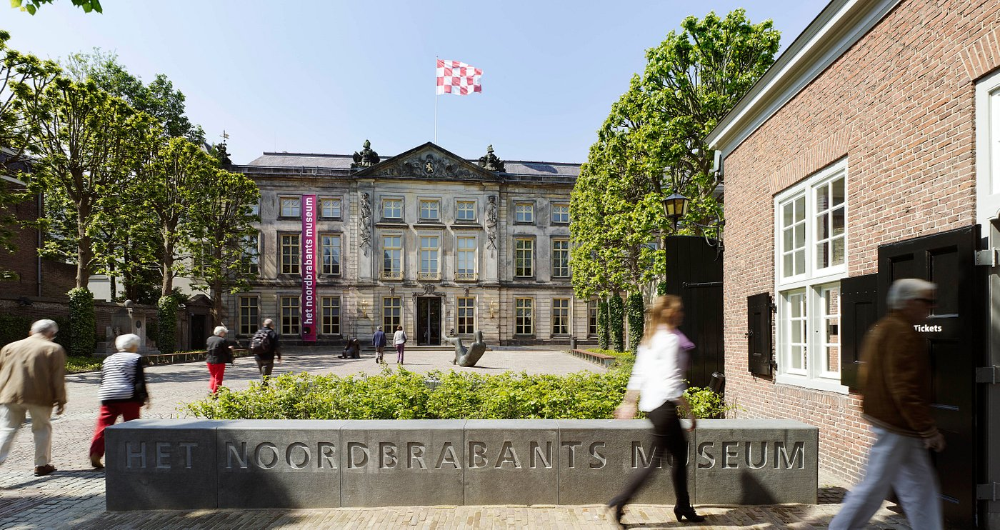

Wist je dat:
een huis in Den Bosch gemiddeld een WOZ-waarde van € 295.000,- heeft
er meer koop- dan huurwoningen zijn
het merendeel van de Bosschenaren ongehuwd is
er bijna 75.000 huishoudens zijn in Den Bosch
het gemiddelde jaarinkomen € 29.000,- is

Een enthousiaste gids wist veel over de geschiedenis van de kathedraal
te vertellen en liet de mooiste plekjes zien!
De St Jan is een van de grootst en mooiste kerken van Nederland.
Zowel het exterieur als het interieur is prachtig gedecoreerd.
Het is ook de moeite om eens de toren te beklimmen met als beloning
een mooi uitzicht over de binnenstad.
In december en een deel van januari is er altijd een grote en vaak
fraaie kerststal die elk jaar anders is.

Het Noord-Brabants museum is een van de parels van Den Bosch.
Een indrukwekkende vaste collectie en prachtige, goed gekozen
wisseltentoonstellingen. Met de Van Gogh tentoonstelling jaren
geleden verwierf het museum verdiend wereldfaam en de kwaliteit
van toen weten ze goed vast te houden. Een aanrader!